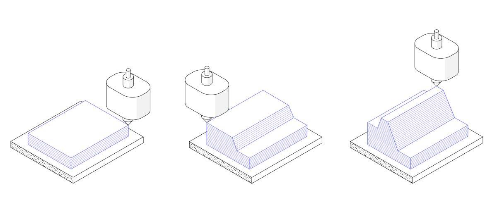

|
|
|
|---|
|
|
|
|---|
Minden 3D nyomtató ugyanazon fő elv alapján épít alkatrészeket: a digitális modell fizikai háromdimenziós objektummá alakul, az anyag egy réteg hozzáadásával. Innen származik az Adalékanyag-gyártás alternatív kifejezés. A 3D nyomtatás alapvetően eltérő módon történik az alkatrészek előállítása, összehasonlítva a hagyományos kivonási vagy formázási technológiákkal. A 3D-s nyomtatáshoz nincs szükség speciális szerszámokra. Ehelyett az alkatrészt rétegenként közvetlenül a beépített platformon gyártják, ami egyedülálló előnyökhöz és korlátozásokhoz vezet.
A folyamat mindig egy digitális 3D-s modellel kezdődik - a fizikai objektum tervétől. A nyomtató szoftvere ezt a modellt vékony, kétdimenziós rétegekké szeleti, majd a gépi nyelvű utasítások sorozatává alakítja (G-kód) a nyomtató számára.
Innentől kezdve a 3D nyomtató működési módja függ például az asztali FDM nyomtatók megolvasztják a műanyag szálakat, és egy fúvókán keresztül lerakják a nyomtatási platformra. A nagy ipari SLS gépek lézert használnak vékony fém- vagy műanyag porrétegek megolvasztására (vagy szinterezésére).
A rendelkezésre álló anyagok folyamatonként is változnak. A műanyagok messze a legelterjedtebbek, de a fémek 3D nyomtatással is nyomtathatók. A gyártott alkatrészeknek széles spektrumú fizikai tulajdonságai is lehetnek, az optikailag tisztaktól a gumiszerű tárgyakig terjedve.
Az alkatrész méretétől és a nyomtató típusától függően a nyomtatás általában körülbelül 4-18 órát vesz igénybe. A 3D-s nyomtatott alkatrészek azonban ritkán használhatók használatra készen a készülékből. Gyakran utófeldolgozásra van szükség a kívánt felületi szín eléréséhez. Ezek a lépések további időt és (általában kézi) erőfeszítést igényelnek.
Az ISO / ASTM 52900 szabvány a 3D nyomtatás különféle típusait 7 csoportba lehet sorolni| 1. | Anyag extrudálás (FDM) | Az anyagot szelektíven adagolják egy fúvókán vagy nyíláson keresztül |
|---|---|---|
| 2. | Tartály polimerizáció (SLA és DLP) | A tartályban lévő folyékony fotopolimer szelektív módon kikeményedik ultraibolya fény segítségével |
| 3. | Poros ágyazás (SLS, DMLS és SLM) | Nagy energiaforrás szelektíven megolvasztja a porrészecskéket |
| 4. | Anyagsugaras (MJ) | Az anyagcseppek szelektíven helyezkednek el és kikeményednek |
| 5. | Binder Jetting (BJ) | A folyékony kötőanyag szelektíven megköti a porréteg régióit |
| 6. | Közvetlen energia lerakódás (LENS, LBMD) | Egy nagy energiaforrású anyag megolvasztja az anyagot, amikor lerakódik |
| 7. | Lemez laminálás (LOM, UAM) | Az anyaglapokat ragasztják és rétegenként képezik |